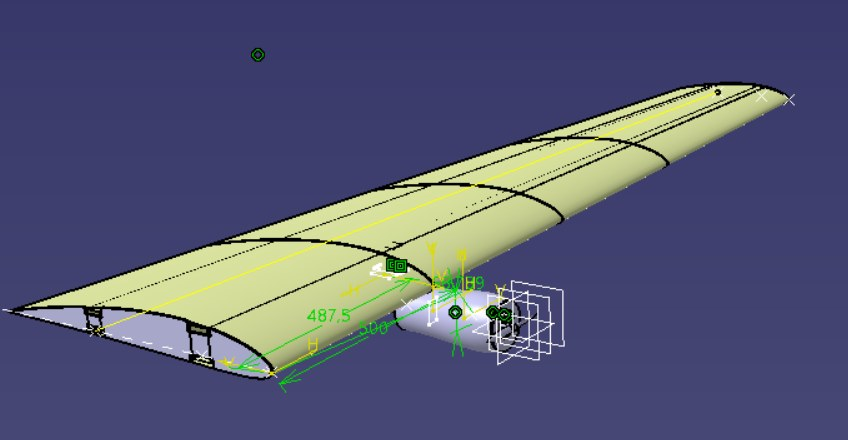
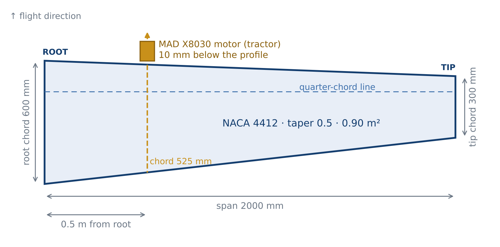
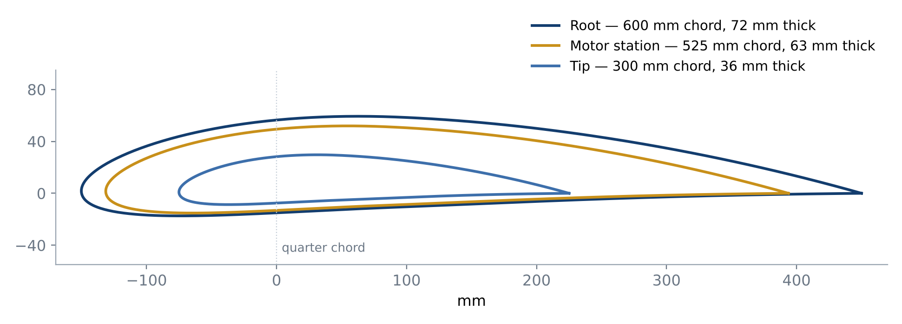
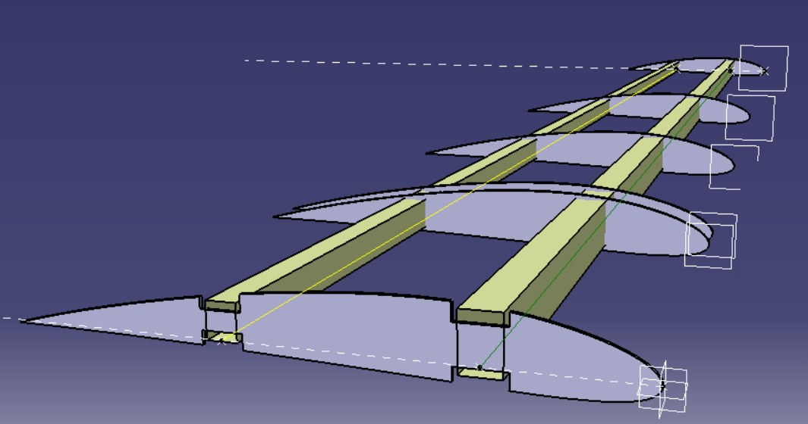
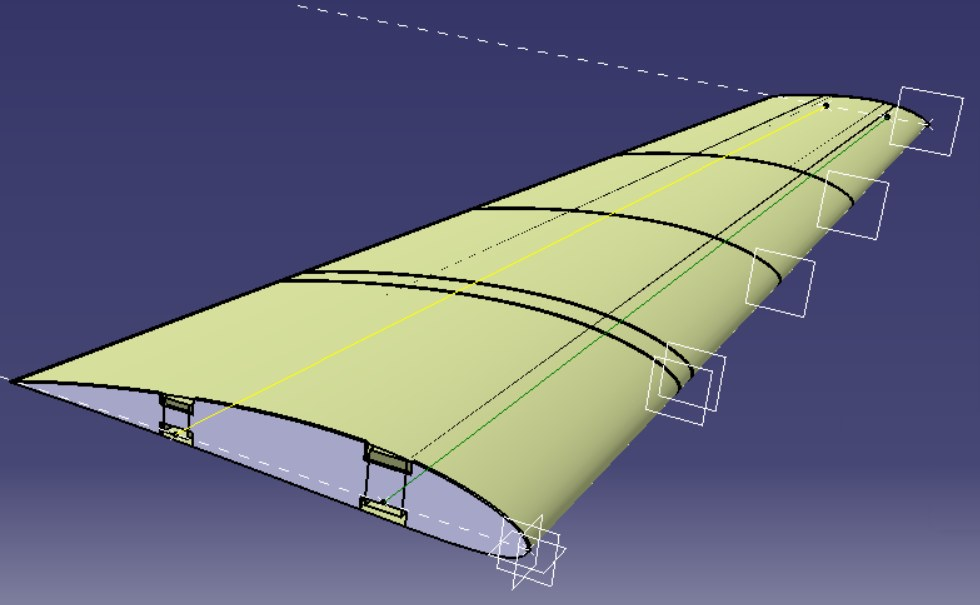
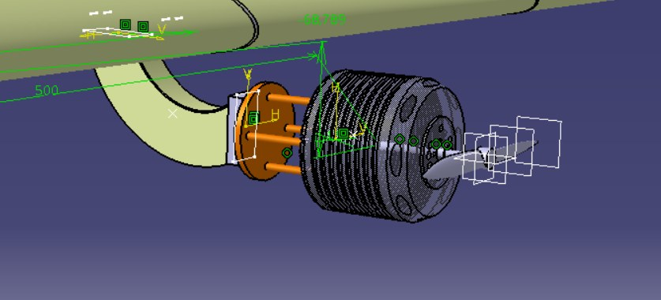
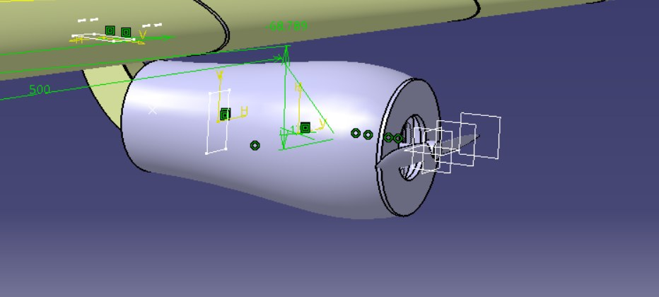

Mechanical Design Test | Spars & Ribs | MAD X8030 Tractor Mount | CATIA V5R21 → ANSYS

A mechanical design test: design the structure of a 2 m composite wing that carries an electric motor — a MAD X8030 (160 KV) mounted in tractor configuration, facing forward — 0.5 m from the root and 10 mm below the airfoil. The wing had to stay under 7 kg, be modelled in CATIA V5 and validated in ANSYS, and be delivered as a STEP assembly with a one-page technical note.
The challenge is the motor: thrust, torque and the motor's own weight all enter the wing at a single point, ahead of and below a thin section. The mount has to carry those loads into the spars without breaking the 7 kg budget.
The brief gave no maximum take-off weight, yet the wing loads depend on it. Rather than leave it implicit, I fixed an MTOW of 30 kg as a stated design assumption, so every sizing decision can be traced back to it and revised if the real figure differs.
The brief's dimensions fix the envelope the structure has to fit inside. The values below follow directly from them:

Schematic drawn from the brief's dimensions. Sweep was not specified, so the quarter-chord line is drawn straight.

Root, motor-station and tip sections aligned at the quarter chord. The structure has only about 63 mm of depth at the motor station — the space in which the spars and the mount have to react the motor loads.
The aerodynamic shape comes first. The NACA 4412 coordinates are imported from Excel (GeometryFromExcel) as root and tip sections, and the skin is lofted between them with multi-section surfaces, so the outer shape is exact and driven by data rather than redrawn by hand.
Inside, the structure is a classic two-spar, multi-rib layout. A front and a rear spar run from root to tip, tapering with the wing, and carry the bending loads; ribs at stations along the span hold the airfoil shape, are notched around the spars, and pass loads from the skin into them.

Front and rear spars running through the ribs. The root rib is split around the spars, and the reference planes at each rib station are visible at the trailing edge.

The lofted skin over the structure. At the open root section, the spar caps and webs show where the spars sit within the 600 mm chord.
The MAD X8030 hangs below the wing at the 500 mm station, facing forward. A curved arm leaves the underside of the wing and brings the load path forward and down to a mounting plate; the motor is carried on three standoffs in front of that plate. The mount stack includes a titanium plate and a thermal-barrier sandwich — both modelled as separate parts in the assembly — to limit heat flow from the motor into the composite structure.

Curved arm, mounting plate, three standoffs and the MAD X8030 with its propeller. The green dimensions in the sketch place the motor 500 mm from the root.

A streamlined nacelle wraps the motor and the mount to reduce drag, with the propeller ahead of it.
CAD complete — ANSYS validation in progress
The CATIA V5 assembly (skin, spars, ribs, motor mount and nacelle) and the STEP export are done. The next step is the ANSYS validation of the wing structure and the motor mount under the loads derived from the 30 kg MTOW assumption, followed by a check of the final mass against the 7 kg limit and the one-page technical note.